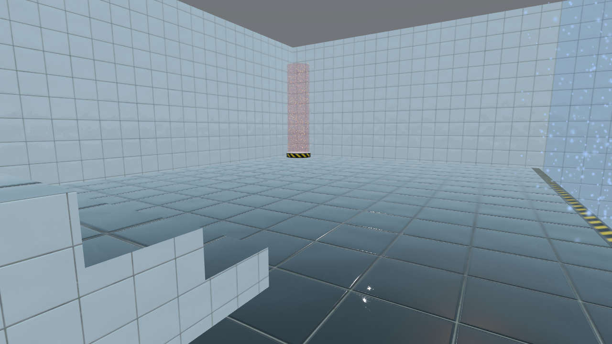

Qt Quick 3D Physics - CharacterController Example
Demonstrates the CharacterController type.

This example shows how to use a CharacterController to move the camera in a scene, giving a first-person view. The character controller represents the viewpoint of the user as an entity that is constrained by the physical geometry of the scene, walks on the ground, climbs up/down stairs, and interacts with triggers.
The scene
The scene consists of a simple building which is defined in Building.qml, and will not be explained in detail. (The mesh building.mesh was made using Blender. It can be recreated from building.gltf using the balsam tool.)
The building contains three triggers:
- A trigger that opens the door. Implemented internally in Building.qml
- A "gravityField" trigger that sets a property
inGravityFieldwhen something is inside it. - A "teleport" trigger that emits a signal
teleporterTriggeredwhen something enters it.
The character controller
The complete character controller logic is as follows:
CharacterController { id: character property vector3d startPos: Qt.vector3d(800, 175, -850) position: startPos function teleportHome() { character.teleport(character.startPos) wasd.cameraRotation.x = 180 } collisionShapes: CapsuleShape { id: capsuleShape diameter: 50 height: wasd.crouchActive ? 0 : 100 Behavior on height { NumberAnimation { duration: 300 } } } property real characterHeight: capsuleShape.height + capsuleShape.diameter sendTriggerReports: true movement: Qt.vector3d(wasd.sideSpeed, 0, wasd.forwardSpeed) Behavior on movement { PropertyAnimation { duration: 200 } } gravity: building.inGravityField ? Qt.vector3d(0, 100, 0) : physicsWorld.gravity eulerRotation.y: wasd.cameraRotation.x PerspectiveCamera { id: camera position: Qt.vector3d(0, character.characterHeight / 2 - 10, 0) eulerRotation.x: wasd.cameraRotation.y clipFar: 10000 clipNear: 10 } }
The character controller needs a shape. Only CapsuleShape is supported. Note that the height property refers to the height of the cylinder part of the capsule: the total height of the character is calculated by adding the height of the bottom and top hemispheres:
collisionShapes: CapsuleShape { id: capsuleShape diameter: 50 height: wasd.crouchActive ? 0 : 100 Behavior on height { NumberAnimation { duration: 300 } } } property real characterHeight: capsuleShape.height + capsuleShape.diameter
In order to trigger a TriggerBody, the character controller must have the sendTriggerReports property set to true:
sendTriggerReports: true
CharacterController has its own gravity property, independent of PhysicsWorld. The common use case is to switch between walking and flying. In this example, we implement an antigravity field by changing the gravity property to point upwards when the character is inside the "gravityField" trigger:
gravity: building.inGravityField ? Qt.vector3d(0, 100, 0) : physicsWorld.gravity
Position and movement
When the teleporterTriggered signal is emitted, we change the position and orientation of the character back to its initial position. Note that the position property should not be changed while the simulation is running. Use the teleport function instead:
property vector3d startPos: Qt.vector3d(800, 175, -850) position: startPos function teleportHome() { character.teleport(character.startPos) wasd.cameraRotation.x = 180 }
The motion of the character is defined by setting the movement property to a velocity. The character will then try to move with that velocity, relative to the forward vector. The character may end up moving at a different speed, since it may be blocked by a wall, or be in free fall. Mouse/keyboard input comes from the wasd object, which is a stripped-down version of WasdController.
movement: Qt.vector3d(wasd.sideSpeed, 0, wasd.forwardSpeed) Behavior on movement { PropertyAnimation { duration: 200 } }
The two rotational axes are handled differently, in order to follow common practice for WASD movement when walking on the ground:
- Vertical rotation changes the view direction, but does not make the character fly up into the air or dig down into the ground.
- Horizontal rotation changes the forward direction of the character. (This is an exeption to the rule that transformations should not be changed when the physics simulation is running: It is safe to change the rotation of the character controller, since that doesn't change the state of the physics engine: it only changes the interpretation of the movement vector.)
eulerRotation.y: wasd.cameraRotation.x PerspectiveCamera { id: camera position: Qt.vector3d(0, character.characterHeight / 2 - 10, 0) eulerRotation.x: wasd.cameraRotation.y clipFar: 10000 clipNear: 10 }
Files:
- charactercontroller/Building.qml
- charactercontroller/CMakeLists.txt
- charactercontroller/Wasd.qml
- charactercontroller/charactercontroller.pro
- charactercontroller/main.cpp
- charactercontroller/main.qml
- charactercontroller/qml.qrc
Images:
- charactercontroller/maps/Tape001_1K_Color.jpg
- charactercontroller/maps/Tape001_1K_NormalGL.jpg
- charactercontroller/maps/Tape001_1K_Roughness.jpg
- charactercontroller/maps/Tiles107_1K_Color.jpg
- charactercontroller/maps/Tiles107_1K_NormalGL.jpg
- charactercontroller/maps/Tiles107_1K_Roughness.jpg
- charactercontroller/maps/Tiles108_1K_Color.jpg
- charactercontroller/maps/sign.png
- charactercontroller/maps/sphere.png
{kind=link}
{kind=link}
{kind=link}
{kind=link}
{kind=link}
{kind=link}
{kind=link}
{kind=link}
{kind=link}